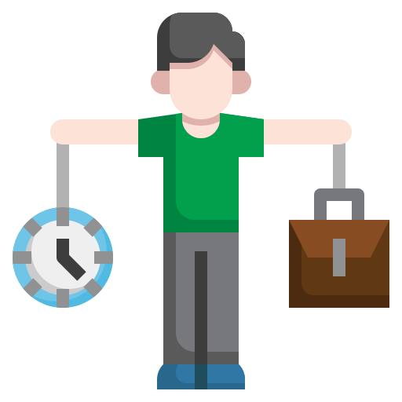
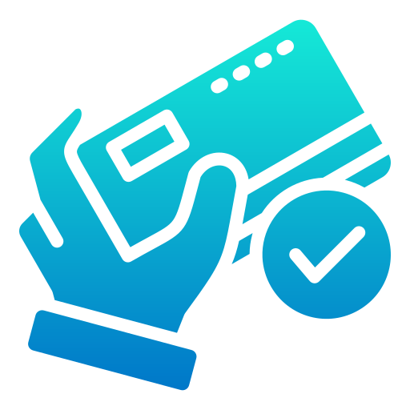
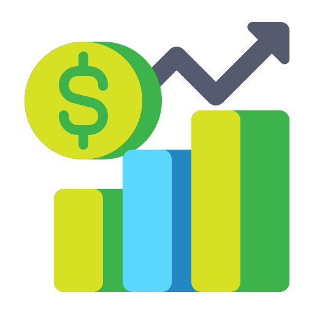
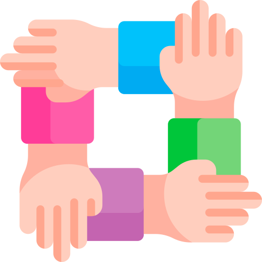
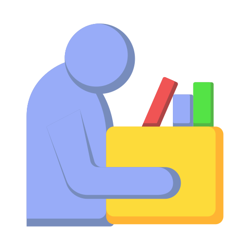

2025년 직장인의 최대 관심사 Top 5

일과 삶의 균형
주 4일제, 유연근무제, 재택근무 등 근무방식의 유연성이 가장 중요한 관심사로 떠오르고 있습니다.

공정한 보상과 연봉 인상
성과에 기반한 인센티브와 투명한 평가, 그리고 현실적인 연봉 인상은 이직 여부를 결정짓는 핵심 요인입니다.

커리어 성장과 자기계발
데이터 역량, 자격증, MBA 등 미래 대비와 이직 경쟁력을 위한 자기계발은 필수가 되었습니다.

조직문화와 정신 건강
수평적 소통, 심리적 안정감, 그리고 건강한 조직문화에 대한 요구가 커지고 있습니다.

퇴사 이후의 삶과 파이어족
퇴사를 꿈꾸며 부업, 자산 형성, 창업 등 파이어족(FIRE) 준비에 관심을 갖는 이들이 많아졌습니다.